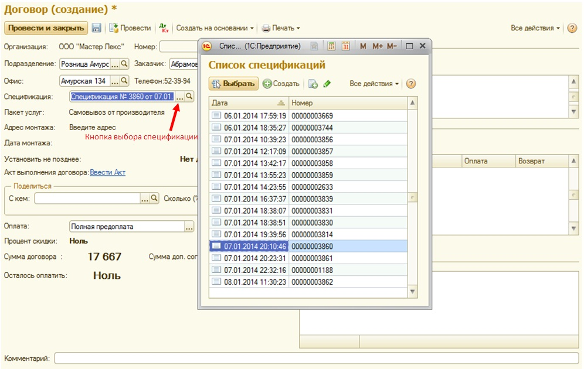

Проблемы при формировании договора :
1. Если сумма вашего договора не совпадает с суммой спецификации, необходимо сделать следующие действия: открыть список спецификаций (кнопка выбора) и выбрать свою, после чего сумма договора станет равной сумме спецификации. См. рисунок
